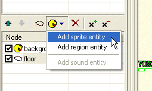
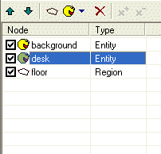

Rada
V tomto kroku se nauèíme, jak vlo�it do scény další grafické objekty a jak nastavit jejich vlastnosti.
Ka�dá scéna se skládá z jednoho nebo více grafickıch objektù, které nazıváme "entity". Entity si mù�ete pøedstavit jako divadelní kulisy. Napøíklad pozadí v naší scénì je jedna entita, kterou ProjectMan automaticky vytvoøil pøi zakládání nové scény. Ale urèitì jste si všimli, �e naše postava se vesele prochází po nábytku, co� nevypadá pøíliš realisticky. Potøebujeme, aby nìkteré èásti scény pøekrıvaly postavy, pokud je to �ádoucí. Napøíklad pokud postava stojí za stolem, chceme, aby ji stùl èásteènì pøekrıval. Všechny objekty ve scénì, které mohou pøekrıvat postavy, musí bıt vytvoøeny jako samostatné entity.
Nyní vytvoøíme ve scénì entitu pro stùl (desk), aby se pak stùl choval tak, jak bychom oèekávali.
Neprve potøebujeme obrázek stolu. Normálnì bychom otevøeli pozadí v nìjakém grafickém programu a vyøízli z nìho èást, pøedstavující stùl, tak aby z nìho vznikl samostatnı objekt. Pro tuto vıuku ji� jsem obrázek pøipravil; najdete ho v adresáøi "tutorial\gfx" a jmenuje se "desk.bmp". Naimportujte obrázek do adresáøe se scénou (jak importovat soubory jsme se nauèili v první kapitole této vıuky).
Otevøete scénu ve SceneEditu (double-click na "MyScene.scene" v nástroji ProjectMan).
Ujistìte se, �e vlevo v seznamu vrstev máte vybránu polo�ku "main". Nyní kliknìte na tlaèítko "Add entity" (Pøidat entitu) a v menu vyberte "Sprite entity". Sprite-entita je reprezentována nìjakou grafikou (v terminologii WME je sprite buïto statickı obrázek, nebo animace). Další mo�né typy entit probereme pozdìji.

SceneEdit vytvoøil novou entitu. Jmenuje se "new entity" a ve scénì je zobrazena jako èervenı obdélník. Nyní potøebujeme zmìnit vlastnosti této novì vytvoøené entity. Vlastnosti lze zmìnit v oknì vlastností (Properties) vlevo dole. Zmìòte název (Name) na "desk". Také mù�ete zmìnit vlastnost Caption (titulek) na "Stùl". Jméno je interní identifikátor entity, zatímco titulek se zobrazí hráèi. Tìï potøebujeme zmìnit grafiku, kterou reprezentuje vlastnost "Sprite" (jak u� jsme si øekli, sprite je buïto obrázek, nebo animace). Kliknìte na tlaèítko s tøemi teèkami vedle vlastnosti Sprite a objeví se standardní okno pro vıbìr souboru. Najdìte soubor "desk.bmp" v adresáøi "scenes\MyScene" (ten, kterı jsme pøed chvílí naimportovali). Po vybrání správného souboru by se mìl zmìnit vzhled naší entity "desk". Nyní by mìla bıt ve scénì zobrazena jako obrázek stolu. Ostatních vlastností entity si prozatím nebudeme všímat.
Entitu mù�ete posouvat ve scénì tak, �e ji pøetáhnete myší. Pøesuòte obrázek stolu tak, aby pøesnì pøekrıval stùl na pozadí (správná pozice by mìla bıt 432, 327).
|
|
Pro posunování objektù ve scénì mù�ete pou�ívat i klávesy se šipkami, tak lze entitu velice pøesnì umístit. Pokud budete bìhem pøesouvání dr�et klávesu SHIFT, bude objekt skákat po pìti pixelech. |
Teï se podívejte vlevo na seznam prvkù. Mìl by vypadat takto (pokud ne, pou�ite tlaèítka se šipkami pro zmìnu poøadí prvkù):

Poøadí prvkù je velice dùle�ité. Tak vlastnì øíkáte hernímu engine, v jakém poøadí má jednotlivé èásti scény vykreslovat (prvky, které jsou v seznamu první, jsou vykreslovány nejdøíve).
Momentálnì vypadá seznam prvk takto:
Herní engine potom zpracovává scénu takto:
Ulo�te scénu a zavøete SceneEdit. Spus�te hru, abychom scénu otestovali. Uvidíte, �e postava je skuteènì vykreslována v�dy nad pozadím i stolem.
Mù�ete zkusit mìnit poøadí prvkù scény, abyste vidìli, jak poøadí ovlivòuje vykreslování. Napøíklad pokud zmìníte poøadí takto:
Potom bude stùl v�dy pøekrıvat postavu (je vykreslován a� po ní). Zkuste si to.
Dobrá, ale my pøece chceme, aby stùl zakrıval postavu jen v pøípadì, �e postava stojí za stolem. Tento úkol dokonèíme v kapitole Krok 3: Rozlo�ení scény.
Mimochodem, všimli jste si, �e stùl se nyní ve høe chová jako interaktivní objekt? Pokud nad nìj pøesunete ukazatel myši, zmìní se kurzor a objeví se titulek "Stùl".